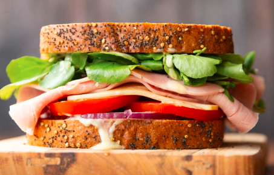

Ham Sandwich

There are so many different ways you can make a ham sandwich
Alrighty, no beating around the bush, here is what you will need:
Ingredients:
- Bread
- Honey, Dijon Mustard, and Mayo
- Red Onion
- Tomato
- Cheese
- Ham
- Watercress
- Seasoning
- Black Pepper
- Salt
Steps:
- In a small pot combine 1/2 tbsp mayo and Dijon mustard with 1 tsp honey.
- Spread over one side of each slice of bread. Top one of those slices with onion, followed by tomato with a pinch of salt.
- Top tomato with cheese, then fold in the ham and sprinkle over a pinch of black pepper. Top with watercress, then add the second slice of bread sauce-side-down.
- Slice in half and enjoy!